1 nom masculin
Cessation volontaire de toute relation avec un individu,
un groupe, un pays et refus des biens qu’il met en circulation.
Le mouvement BDS (Boycott, Désinvestissement
et Sanctions) a été lancé par la société civile
palestinienne en 2005. Il appelle à une pression
économique sur Israël pour mettre fin
à l’occupation et à l’apartheid 2 pratiqué contre
les Palestiniens. Une des stratégies clés
du mouvement est le boycott des produits
et services d’entreprises qui sont impliquées
dans des activités soutenant l’occupation
israélienne ou les colonies illégales.
Seul un boycott ciblé peut avoir
un réel impact sur les entreprises.
Le BNC (Comité National palestinien pour le BDS) cible
ainsi un nombre limité d’entreprises. En effet,
en tant que mouvement inter-sectionnel
qui relie la libération palestinienne aux luttes
pour la justice raciale, autochtone, sociale,
de genre et climatique, nous recommandons
de donner la priorité au boycott des entreprises
qui sont la cible de mobilisations dans d’autres
luttes des opprimés. C’est pourquoi seule
une concentration stratégique sur un nombre
2 Système d’oppression et de domination d’un groupe racial
sur un autre, institutionnalisé à travers des lois, des politiques
et des pratiques discriminatoires.
relativement restreint d’entreprises
et de produits soigneusement selectionnés
permettra d’obtenir un impact maximal,
et un réel potentiel de victoire.
À noter que les entreprises suscitent
la complicité même si elles n’ont pas participé
directement à un crime international spécifique,
ou n’ont pas bénéficié d’un crime international
spécifique. La poursuite des relations de statu
quo avec la simple connaissance du fait que
le crime s’est produit ou qu’il existe un risque
crédible de se produire peut suffire à susciter
ladite complicité.
Pour plus d'infos :
☞ https://boycotzionism.com/fr
☞ https://bdsmovement.net/
☞ https://boycott.thewitness.news
☞ https://boycott-israel.org
☞ https://free-palestine.news
☞ https://www.france-palestine.org
☞ https://www.indigne-du-canape.com
☞ https://www.apartheidfreezone.be
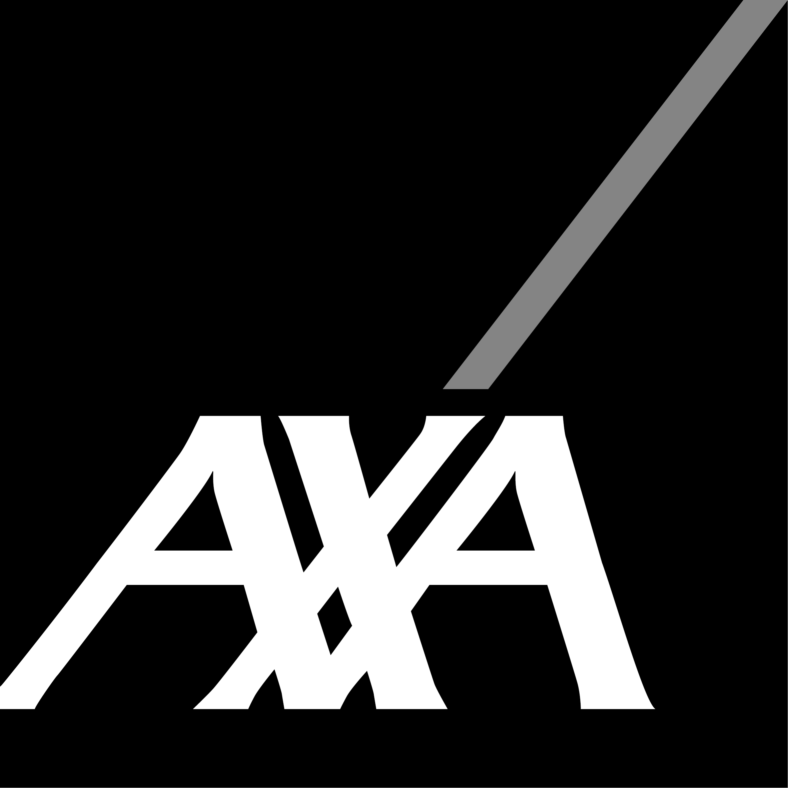
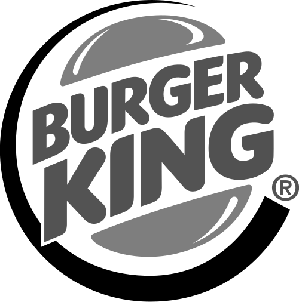
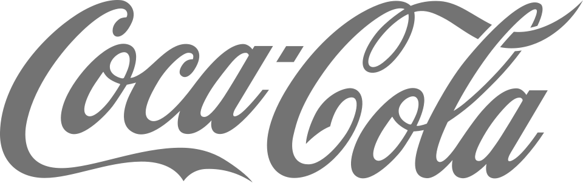
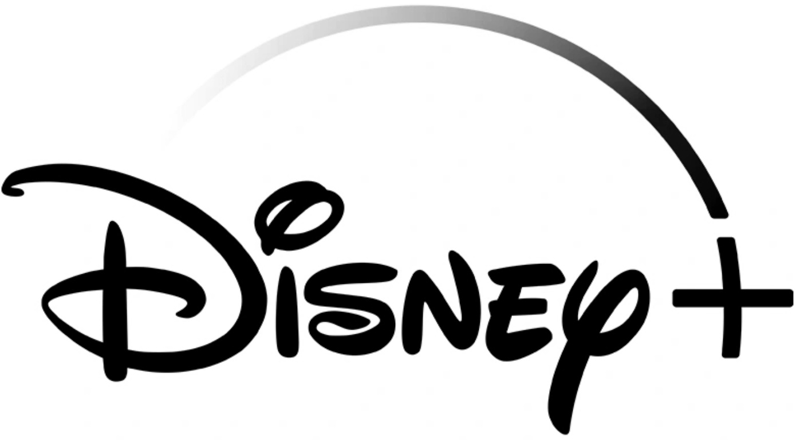
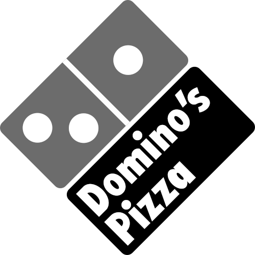
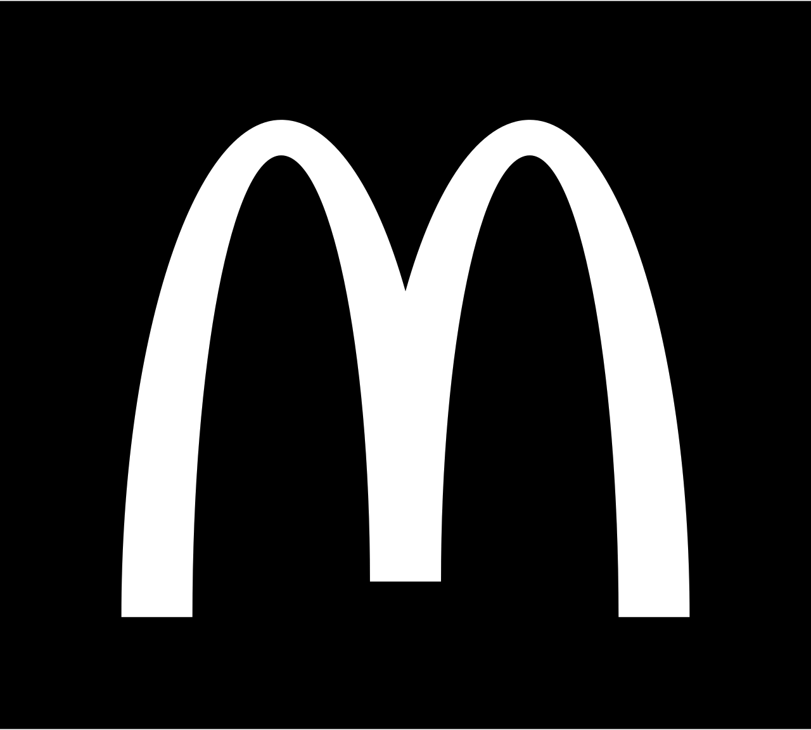
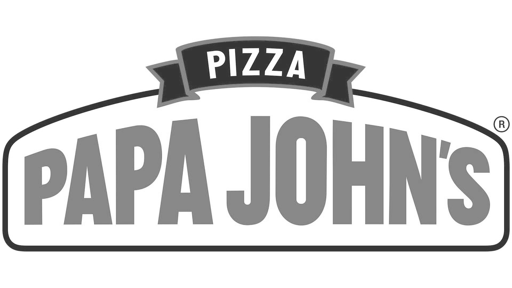
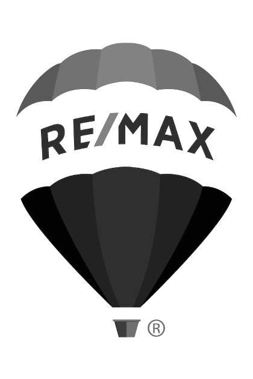
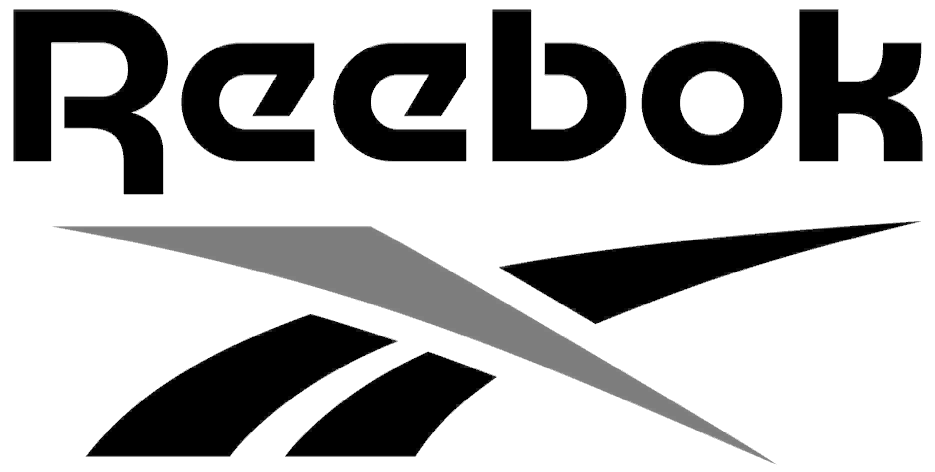
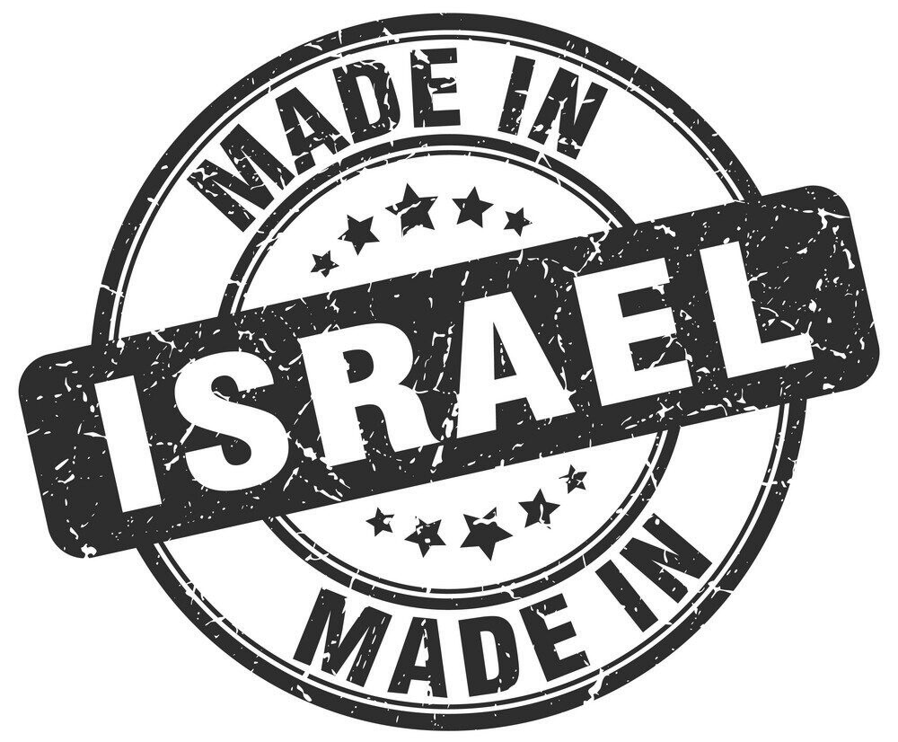
Édition web to print, réalisées avec des outils libres et web (langages html et css).
Conception graphique :
☞ Aela Gosset
Typographies :
☞ Riposte dessinée par
Good Type Foundry
☞ Rizado Script, dessinée par Nikola Kostić
et Zoran Kostić
Merci aux crayons de :
☞ Tom Bellanger
☞ Estelle Fradin
☞ Jeanne Rousselot
☞ Manon Vandekerckhove
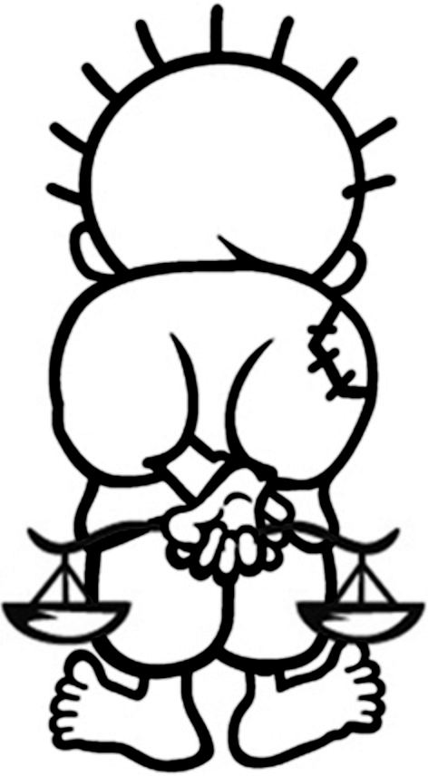